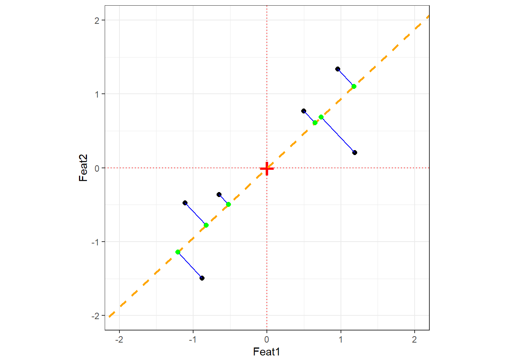
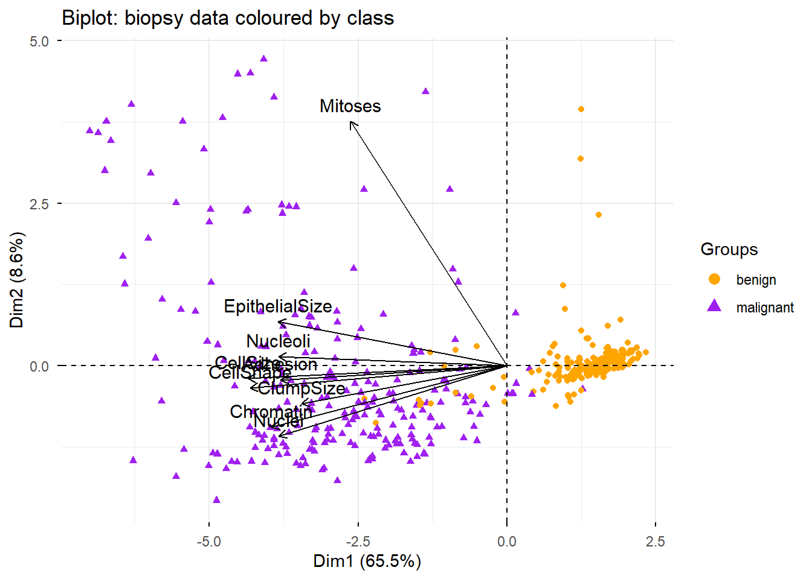

This tutorial introduces dimension reduction methods with R. The aim is to show how these methods work, how to prepare data for them, and how to implement three of the most widely used techniques in linguistics and the social sciences: Principal Component Analysis (PCA), Multidimensional Scaling (MDS), and Exploratory Factor Analysis (EFA). Reducing many variables to a smaller number of meaningful dimensions is useful for visualisation, noise reduction, identifying latent structure, and simplifying complex data sets for further analysis.
This tutorial is aimed at beginners and intermediate users of R. The goal is not to provide an exhaustive statistical treatment but to give a solid conceptual grounding and practical hands-on experience with each method.
Prerequisite Tutorials
Before working through this tutorial, you should be comfortable with the content of the following tutorials:
Explain what dimension reduction is and why it is useful in linguistic and social science research
Distinguish between PCA, MDS, and EFA and understand when each method is appropriate
Understand the key concepts underlying PCA: eigenvectors, eigenvalues, principal components, loading scores, and explained variance
Implement PCA in R using prcomp() and princomp(), interpret scree plots and biplots, and extract loading scores
Implement MDS in R using cmdscale(), compute a distance matrix, and interpret an MDS plot
Implement EFA in R using factanal(), determine the number of factors using scree plots and the Kaiser criterion, and interpret factor loadings and uniqueness scores
Choose the most appropriate dimension reduction method for a given research question and data structure
Citation
Martin Schweinberger. 2026. Dimension Reduction Methods with R. The Language Technology and Data Analysis Laboratory (LADAL), The University of Queensland, Australia. url: https://ladal.edu.au/tutorials/dimensionredux_tutorial/dimensionredux_tutorial.html (Version 2026.03.27), doi: .
Preparation and session set up
This tutorial requires several R packages. Run the installation code below if you have not yet installed them (you only need to do this once).
What you will learn: What dimension reduction is; why it is useful; the three main methods covered in this tutorial (PCA, MDS, FA); and the key difference between each
Dimension reduction methods such as Principal Component Analysis (PCA), Multidimensional Scaling (MDS), and Factor Analysis (FA) are techniques used to reduce the number of variables or dimensions in a data set while preserving as much relevant information as possible(Jolliffe 2002; Field, Miles, and Field 2012).
The need for dimension reduction arises because:
High-dimensional data is difficult to visualise directly — humans can intuitively perceive two or three dimensions, not fifty
Many variables in a real data set are correlated and therefore contain redundant information
Reducing dimensions removes noise and makes patterns more visible
Downstream statistical models often perform better on a smaller set of meaningful dimensions
Below are brief explanations of the three methods covered in this tutorial.
Principal Component Analysis (PCA)
PCA transforms a data set into a new coordinate system where the new variables (principal components) are linearly uncorrelated. It finds a set of orthogonal axes such that the first principal component captures the maximum variance in the data, the second captures the second maximum variance, and so on. By selecting only the top components, you achieve dimension reduction while retaining the most important information.
PCA is driven by the covariance matrix of the data. It is most effective when the dominant structure in the data can be captured by a small number of linear combinations of the original variables.
Multidimensional Scaling (MDS)
MDS represents high-dimensional data in a lower-dimensional space — usually 2D or 3D — while preserving pairwise distances or similarities between data points. Rather than starting from correlations between variables (as PCA does), MDS starts from a distance matrix between observations.
MDS is particularly useful for visualising the similarity structure of a set of items — for example, how similar a set of languages are to each other based on a profile of typological features, or how different survey respondents are from each other.
Factor Analysis (FA)
Factor Analysis aims to uncover underlying latent factors that explain the observed correlations among variables. It assumes that the observed variables are imperfect reflections of a smaller number of hidden (latent) constructs — for example, that responses to twenty survey items about language attitudes actually reflect three underlying attitude dimensions.
FA is driven by the correlation matrix of the variables. Unlike PCA (which is a mathematical transformation with no model assumptions), FA explicitly models each observed variable as a combination of common factors and a variable-specific unique component.
Key comparison
PCA
MDS
Factor Analysis
Starting point
Covariance matrix
Distance matrix
Correlation matrix
Goal
Maximise captured variance
Preserve pairwise distances
Identify latent factors
Assumptions
None (pure transformation)
None (pure transformation)
Explicit factor model
Output
Principal components
Coordinates in reduced space
Factor loadings + uniqueness
Typical use
Data reduction, visualisation
Similarity mapping
Construct validation, surveys
Exercises: Overview
Q1. A researcher has collected measurements of 30 grammatical features across 50 languages and wants to visualise which languages are most similar to each other. Which dimension reduction method is most appropriate and why?
Principal Component Analysis
Section Overview
What you will learn: The conceptual foundations of PCA — centering and scaling, eigenvectors and eigenvalues, variance explained, loading scores; how PCA differs from ordinary least squares regression; and three worked examples in R
Principal Component Analysis (PCA) is used for dimensionality reduction and data compression while preserving as much variance as possible (Jolliffe 2002). It achieves this by transforming the original data into a new coordinate system defined by a set of orthogonal axes called principal components. The first principal component captures the maximum variance in the data, the second captures the second maximum variance, and so on.
A conceptual introduction to PCA
To make PCA tangible, consider a classic analogy. Imagine you have just opened a cider shop with 50 varieties of cider. You want to arrange them on shelves so that similar-tasting ciders are grouped together. There are many taste dimensions: sweetness, tartness, bitterness, yeastiness, fruitiness, fizziness, and so on. PCA helps you answer:
Which combination of taste qualities is most useful for distinguishing groups of ciders?
Can some taste variables be combined — because they tend to go together — into a single summary dimension?
This is essentially what PCA does: it finds new axes (principal components) that are combinations of the original variables and that explain the maximum amount of variation in the data. The first component is the single axis along which the data varies most; the second (orthogonal to the first) is the next most variable direction; and so on.
PCA can tell us if and how many groups there are in our data, and it can tell us what features are responsible for the division into groups.
Step-by-step: how PCA works
Let us work through a minimal example with just two features and six language observations to build intuition.
Language
Feat1
Feat2
Feat3
Feat4
Lang1
10
6.0
12.0
5
Lang2
11
4.0
9.0
7
Lang3
8
5.0
10.0
6
Lang4
3
3.0
2.5
2
Lang5
1
2.8
1.3
4
Lang6
2
1.0
2.0
7
When we plot Feat1 alone, we can already see two clusters:
Adding Feat2 on the y-axis:
Two groups are visible. The PCA procedure now finds the best line through these data points — but “best” here means something different from regression.
Why PCA differs from regression
In Ordinary Least Squares (OLS) regression, residuals are measured perpendicular to the x-axis. In PCA, residuals are measured perpendicular to the line itself. This is a crucial difference: PCA treats all variables symmetrically — there is no dependent variable — and finds the direction that minimises the orthogonal distances from points to the line.
Language
Feat1
Feat2
Lang1
10
6.0
Lang2
11
4.0
Lang3
8
5.0
Lang4
3
3.0
Lang5
1
2.8
Lang6
2
1.0
Step 1: Centre and scale
Always centre and scale your data before PCA
If you do not scale your variables, components will be driven by whichever variable has the largest raw scale — not because it is more important, but simply because its numbers are bigger. Centering sets the mean to zero; scaling sets each variable’s standard deviation to one. The relationship between data points is unchanged by this transformation.
After centering and scaling, the origin (0, 0) sits at the mean of the data.
Step 2: Find PC1
PC1 is the line through the origin that maximises the spread of the projected data points — equivalently, it minimises the sum of squared orthogonal distances between each point and the line. The direction of this line is the eigenvector of PC1; the amount of variance it captures is the eigenvalue.

The orange dashed line is PC1. The blue lines are the orthogonal distances from each point to PC1; the green points are the projections. PCA minimises the sum of squared blue line lengths — equivalently, it maximises the spread of the green projection points.
Step 3: Find PC2
PC2 is simply the line perpendicular to PC1 that also passes through the origin. In 2D there is only one such direction; in higher dimensions, PC2 is the direction orthogonal to PC1 that captures the most remaining variance.
Eigenvectors and eigenvalues
Eigenvector vs. Eigenvalue — two different things
Eigenvector: The direction of a principal component. For a 2-variable PCA, the eigenvector for PC1 specifies the proportion of each original variable that contributes to PC1. These proportions are the loading scores. For example, if the eigenvector is (0.728, 0.685), then PC1 is composed of 72.8% of Feat1 and 68.5% of Feat2.
Eigenvalue: The amount of variance captured by a principal component. Eigenvalues for PC1 are always larger than for PC2, PC2 larger than PC3, and so on. The proportion of total variance explained by PCk is its eigenvalue divided by the sum of all eigenvalues.
Step 4: Visualise — rotate to PC axes
The final PCA plot is simply the data projected onto the PC axes. Rotating so that PC1 is horizontal and PC2 is vertical gives the familiar PCA scatter plot:
Each PC has an associated eigenvalue representing the variance it captures. The proportion of variance explained by PCk is simply its eigenvalue divided by the total sum of all eigenvalues.
In the covariance matrix of the PCA-rotated data, the off-diagonal elements are all zero (the components are uncorrelated by construction), and the diagonal elements are the eigenvalues of the components. The total variance is preserved:
Code
sdpc1 <-sd(pcaex$x[, 1])sdpc2 <-sd(pcaex$x[, 2])# Proportion of variance explained by PC1sdpc1^2/ (sdpc1^2+ sdpc2^2)
[1] 0.8978
Code
# Proportion of variance explained by PC2sdpc2^2/ (sdpc1^2+ sdpc2^2)
[1] 0.1022
Cross-check against prcomp:
Importance of components:
PC1 PC2
Standard deviation 1.340 0.452
Proportion of Variance 0.898 0.102
Cumulative Proportion 0.898 1.000
Example 1: PCA on simulated language data
This example shows how to use prcomp(), generate a scree plot, create a PCA scatter plot, and extract the features that contribute most to PC1.
We simulate data representing 100 features measured across 10 languages (5 Indo-European, 5 Austronesian). Languages within each family are expected to be more similar to each other.
Here we use PCA to check whether 5 Likert-scale items all capture the same underlying construct (outgoingness / extraversion). If they do, PC1 should explain a very large proportion of variance, and all five items should load similarly on PC1.
Importance of components:
Comp.1 Comp.2 Comp.3 Comp.4 Comp.5
Standard deviation 3.232 0.62657 0.50634 0.44586 0.332592
Proportion of Variance 0.916 0.03443 0.02248 0.01743 0.009701
Cumulative Proportion 0.916 0.95038 0.97287 0.99030 1.000000
PC1 alone explains over 91% of the variance — a very strong result suggesting the five items reliably reflect a single underlying dimension. The scree plot makes this visual:
This example applies PCA to the biopsy dataset from the MASS package. The data contains 9 cytological measurements for biopsy samples, each labelled as either benign or malignant. PCA can reveal whether the measurements naturally separate the two classes.
Warning in geom_bar(stat = "identity", fill = barfill, color = barcolor, :
Ignoring empty aesthetic: `width`.
The biplot overlays both data points (coloured by diagnosis) and variable arrows, allowing us to see simultaneously how samples cluster and which variables drive the separation:
Code
fviz_pca_biplot(biopsy_pca,geom ="point",label ="var",habillage = biopsy_nona$class,col.var ="black") + ggplot2::scale_color_manual(values =c("orange", "purple")) +ggtitle("Biplot: biopsy data coloured by class")
Warning: Using `size` aesthetic for lines was deprecated in ggplot2 3.4.0.
ℹ Please use `linewidth` instead.
ℹ The deprecated feature was likely used in the ggpubr package.
Please report the issue at <https://github.com/kassambara/ggpubr/issues>.

The biplot can be interpreted as follows:
Positively correlated variables cluster together (their arrows point in the same direction)
Negatively correlated variables point in opposite directions from the origin
Variables further from the origin are better represented on the plot (higher quality of representation)
The two classes (benign in orange, malignant in purple) separate clearly along PC1
Why do nearly all variable arrows cluster together? Because almost all variables are positively correlated — samples with larger cell sizes tend to have larger nuclei, more adhesion, etc. The correlation matrix confirms this:
ClumpSize
CellSize
CellShape
Adhesion
EpithelialSize
Nuclei
Chromatin
Nucleoli
Mitoses
1.00
0.64
0.65
0.49
0.52
0.59
0.55
0.53
0.35
0.64
1.00
0.91
0.71
0.75
0.69
0.76
0.72
0.46
0.65
0.91
1.00
0.69
0.72
0.71
0.74
0.72
0.44
0.49
0.71
0.69
1.00
0.59
0.67
0.67
0.60
0.42
0.52
0.75
0.72
0.59
1.00
0.59
0.62
0.63
0.48
0.59
0.69
0.71
0.67
0.59
1.00
0.68
0.58
0.34
0.55
0.76
0.74
0.67
0.62
0.68
1.00
0.67
0.35
0.53
0.72
0.72
0.60
0.63
0.58
0.67
1.00
0.43
0.35
0.46
0.44
0.42
0.48
0.34
0.35
0.43
1.00
Mitoses stands out with lower correlations to the other variables, which is why its arrow diverges from the main cluster in the biplot.
Exercises: PCA
Q2. After running a PCA on a corpus of 500 texts described by 50 frequency-based features, a researcher finds that PC1 explains 72% of the variance and PC2 explains 11%. She decides to retain only PC1 for downstream analysis. Is this decision justified? What information does she lose?
Multidimensional Scaling
Section Overview
What you will learn: What MDS is and how it differs from PCA; metric vs. non-metric MDS; how to compute a distance matrix and run MDS in R; and how to interpret an MDS plot
Multidimensional Scaling (MDS) is used to visualise high-dimensional data in a lower-dimensional space — usually 2D or 3D — while preserving pairwise distances or similarities between data points(Davison 1983). MDS aims to represent the similarity structure of a set of items as accurately as possible.
How MDS differs from PCA
MDS and PCA both result in a low-dimensional plot, but they start from different inputs:
PCA starts from the covariance matrix of the variables and finds linear combinations that maximise variance
MDS starts from a distance matrix between observations and finds a configuration in low-dimensional space where the distances between points match the original distances as closely as possible
MDS is often used when:
You have a precomputed distance or dissimilarity matrix (rather than raw variable measurements)
Your research question is explicitly about similarities between cases (e.g. “which languages are most similar to each other?”)
You want to visualise the proximity structure without assuming linear structure in the data
Metric vs. non-metric MDS
Metric (classical) MDS — also known as Principal Coordinate Analysis (PCoA) — assumes that the distance matrix reflects true metric distances and aims to reproduce those distances exactly. This is implemented in R via cmdscale().
Non-metric MDS — preserves the rank order of distances rather than the distances themselves. It is appropriate when your distances are ordinal (e.g. similarity ratings) rather than true numerical distances. This is implemented via isoMDS() in the MASS package.
For most corpus linguistics and survey applications, metric MDS is the natural starting point.
Example: MDS on survey data
We continue with the same survey data set (15 items assessing three constructs: outgoingness, intelligence, and attitude across 20 participants). MDS will reveal whether the 15 items group into three interpretable clusters.
Compute the Euclidean distance matrix. We transpose, scale, and centre for the same reasons as in PCA — to ensure all items are on a comparable scale before computing distances:
Code
survey_dist <-dist(scale(t(surveydata), center =TRUE, scale =TRUE),method ="euclidean")
Run classical MDS (eigenvalue decomposition of the distance matrix):
Code
mds.obj <-cmdscale( survey_dist,eig =TRUE, # include eigenvaluesx.ret =TRUE# include the distance matrix)
Calculate the percentage of variation explained by each MDS axis:
The plot shows three well-separated clusters, corresponding to the three constructs assessed by the survey. Items within each construct are placed close together; items from different constructs are far apart. Notably, Q10_Intelligence sits apart from the other intelligence items, suggesting it may not measure the same construct as the others — a potentially important finding for survey refinement.
Exercises: MDS
Q3. In the MDS plot above, Q10_Intelligence is placed noticeably further from the other intelligence items than any item is from its own group. What does this tell us, and what should the researcher do?
Factor Analysis
Section Overview
What you will learn: What Factor Analysis is and how it differs from PCA; exploratory (EFA) vs. confirmatory (CFA) factor analysis; how to determine the number of factors using scree plots and the Kaiser criterion; how to implement EFA in R with factanal(); and how to interpret uniqueness scores, factor loadings, and the significance test
Factor Analysis is used to identify underlying latent factors that explain the observed correlations among variables in a data set (Kim and Mueller 1978; Field, Miles, and Field 2012). It reduces complexity by identifying a smaller number of latent variables (factors) that account for the shared variance among observed variables. Ideally, variables representing the same underlying factor should be highly correlated with each other and uncorrelated with variables representing other factors.
EFA vs. CFA
Exploratory Factor Analysis (EFA) — used when you do not know in advance how many factors are present or which variables load on which factors. EFA lets the data determine the factor structure. This is what we cover in this tutorial.
Confirmatory Factor Analysis (CFA) — used when you have a prior hypothesis about the factor structure and want to test whether your data are consistent with that structure. CFA is implemented using Structural Equation Modelling (SEM) in R via the lavaan package. See the Structural Equation Modelling tutorial for details.
Rotation in EFA
After extracting an initial factor solution, EFA applies a rotation step to transform the factor structure into a more interpretable form. Rotation aims to achieve simple structure: each variable loads highly on only one factor, and each factor is defined by a distinct subset of variables.
Varimax — an orthogonal rotation that assumes the factors are uncorrelated. It maximises the variance of squared loadings within each factor, pushing loadings toward 0 or ±1. This is the default and most widely used rotation method (Field, Miles, and Field 2012, 755).
Oblimin / Promax — oblique rotations that allow factors to be correlated. More appropriate when you expect the underlying constructs to be related to each other (e.g. different aspects of language proficiency).
Determining the number of factors
Before running EFA, you need to decide how many factors to extract. Two common approaches:
Scree plot — plot eigenvalues in descending order and look for a “point of inflexion” (elbow) where the slope flattens. The number of factors is the number of eigenvalues above the elbow.
Kaiser criterion(Kaiser 1960) — retain all factors with eigenvalues greater than 1. The rationale is that a factor should explain at least as much variance as a single variable. Note that Field, Miles, and Field (2012) (p. 763) and others caution that the Kaiser criterion can over-extract factors; use it alongside the scree plot.
Example: EFA on survey data
We continue with the same 15-item survey data set. The scree plot helps us decide how many factors to extract:
There is a clear elbow at 3 factors — eigenvalues drop sharply after the third. The blue dotted line shows the Kaiser criterion (eigenvalue = 1): again suggesting 3 factors. We proceed with 3.
Call:
factanal(x = surveydata, factors = 3)
Uniquenesses:
Q01_Outgoing Q02_Outgoing Q03_Outgoing Q04_Outgoing
0.09 0.06 0.12 0.07
Q05_Outgoing Q06_Intelligence Q07_Intelligence Q08_Intelligence
0.14 0.10 0.13 0.10
Q09_Intelligence Q10_Intelligence Q11_Attitude Q12_Attitude
0.28 0.41 0.08 0.14
Q13_Attitude Q14_Attitude Q15_Attitude
0.04 0.09 0.06
Loadings:
Factor1 Factor2 Factor3
Q06_Intelligence -0.82 0.25 0.41
Q07_Intelligence -0.80 0.47
Q08_Intelligence -0.85 0.42
Q09_Intelligence -0.79 0.29
Q11_Attitude 0.96
Q12_Attitude 0.92
Q13_Attitude 0.97
Q14_Attitude 0.95
Q15_Attitude 0.96
Q01_Outgoing 0.94
Q02_Outgoing 0.96
Q03_Outgoing 0.93
Q04_Outgoing 0.96
Q05_Outgoing 0.92
Q10_Intelligence -0.22 -0.46 0.57
Factor1 Factor2 Factor3
SS loadings 7.29 4.78 1.02
Proportion Var 0.49 0.32 0.07
Cumulative Var 0.49 0.80 0.87
Test of the hypothesis that 3 factors are sufficient.
The chi square statistic is 62.79 on 63 degrees of freedom.
The p-value is 0.484
Interpreting the output
Uniqueness scores — the proportion of each variable’s variance not explained by the common factors. A high uniqueness score (close to 1) means the variable shares little variance with any of the factors and may be a poor indicator of any latent construct. Note that Q10_Intelligence has a high uniqueness score, consistent with what the MDS plot showed.
Factor loadings — correlations between each observed variable and each latent factor. Loadings indicate how strongly each variable is associated with each factor. Conventional thresholds (Field, Miles, and Field 2012, 762):
Loading magnitude
Interpretation
< 0.4
Low — weak association
0.4 – 0.6
Acceptable
> 0.6
High — strong association
SS loadings — the sum-of-squared loadings for each factor, which represents the variance the factor explains across all variables. Each factor should ideally have SS loadings > 1. If a factor falls below 1, it may not be contributing meaningfully and could be removed.
The p-value — tests whether the current factor solution fits the data. A non-significant p-value (p > .05) suggests the number of factors is sufficient. A significant p-value suggests you may need more factors — though with small samples this test has low power.
Three groups are clearly visible, corresponding to the three constructs. Q10_Intelligence sits apart from the other intelligence items, further confirming that it is a problematic item that does not reliably reflect the intelligence construct.
Exercises: Factor Analysis
Q4. In the EFA output above, Q05_Outgoing has a uniqueness score of 0.08. Q10_Intelligence has a uniqueness score of 0.61. What does this difference mean for the measurement quality of each item?
When to Use Which Method?
Section Overview
What you will learn: A structured decision guide for choosing between PCA, MDS, and FA based on your research question, data structure, and goals
Choosing the right dimension reduction method requires thinking carefully about what you want to achieve and what your data look like. The following questions guide the decision:
Decision framework
1. What is your primary goal?
Reducing many variables to a smaller set for downstream analysis (regression, clustering, visualisation) → PCA is usually the first choice. It is computationally efficient, makes no model assumptions, and the components are well-defined mathematically.
Visualising which observations (not variables) are most similar to each other → MDS is the right tool. You need a distance or dissimilarity matrix between cases.
Identifying hidden latent constructs that explain shared variance among variables → FA is appropriate. It explicitly models each variable as a function of common factors plus unique variance.
2. What is your starting point?
Raw variable measurements → PCA or FA (compute covariance or correlation matrix internally)
A pre-computed distance or dissimilarity matrix → MDS
3. Are your variables correlated?
Highly correlated variables suggest a small number of underlying dimensions → FA or PCA will work well
Variables with low mutual correlations → dimension reduction may not be appropriate; each variable may capture unique information
4. Do you have a theoretical model?
No prior hypothesis about factor structure → EFA
Prior hypothesis to test → CFA (via lavaan)
No model, just want to compress data → PCA
Summary decision table
Situation
Recommended method
50 frequency features, want to find dominant patterns
PCA
20 languages described by typological features, want to map similarity
MDS
30 survey items, want to find underlying attitude dimensions
EFA
Hypothesis: survey items reflect 4 specific factors
CFA (lavaan)
Want to reduce features before running a regression
PCA
Have raw similarity ratings between texts
MDS
Want to validate a measurement instrument
EFA → CFA
Exercises: Method choice
Q5. A researcher has collected responses to 40 Likert-scale items from 300 university students as part of a study on language learning motivation. She suspects that the items reflect 5 underlying motivational dimensions but is not certain. Which method should she use, and why?
Summary
This tutorial has introduced three fundamental dimension reduction methods — PCA, MDS, and Factor Analysis — and shown how to implement each in R.
PCA transforms data into a new set of orthogonal axes (principal components) that capture decreasing proportions of variance. It is the workhorse method for data reduction and visualisation. Key steps: centre and scale the data, run prcomp(), inspect the scree plot, extract loading scores, and plot the first two PCs. The first PC captures the most variance; subsequent PCs each capture less. Eigenvalues quantify variance captured; eigenvectors define the direction of each component.
MDS maps pairwise distances between observations into a low-dimensional visual space. It starts from a distance matrix rather than raw measurements. Classical MDS via cmdscale() is equivalent to PCA on the distance matrix. MDS is the right choice when your research question is about which observations are most similar to each other.
Factor Analysis models observed variables as noisy reflections of underlying latent factors. EFA via factanal() extracts factors, applies rotation (Varimax by default) to maximise interpretability, and reports factor loadings (the correlations between observed variables and latent factors) and uniqueness scores (the proportion of variance not explained by any factor). The scree plot and Kaiser criterion help determine the number of factors. Items with high uniqueness scores are poor indicators of any latent construct and should be reviewed.
Choosing between methods comes down to your research goal: data reduction and visualisation → PCA; mapping observation similarity → MDS; identifying latent constructs → EFA → CFA.
Martin Schweinberger. 2026. Dimension Reduction Methods with R. The Language Technology and Data Analysis Laboratory (LADAL), The University of Queensland, Australia. url: https://ladal.edu.au/tutorials/dimensionredux_tutorial/dimensionredux_tutorial.html (Version 2026.03.27), doi: .
@manual{martinschweinberger2026dimension,
author = {Martin Schweinberger},
title = {Dimension Reduction Methods with R},
year = {2026},
note = {https://ladal.edu.au/tutorials/dimensionredux_tutorial/dimensionredux_tutorial.html},
organization = {The Language Technology and Data Analysis Laboratory (LADAL), The University of Queensland, Australia},
edition = {2026.03.27}
doi = {}
}
This tutorial was substantially revised and expanded with the assistance of Claude (claude.ai), a large language model created by Anthropic. Claude was used to restructure the tutorial into Quarto format, write the expanded theoretical introduction (distributional hypothesis, count-based vs. neural embeddings), add the TF-IDF section, add the text2vec GloVe training section, produce all new visualisation sections (cosine heatmap, silhouette plot, conceptual map, t-SNE, UMAP), write all callouts, write the quiz questions and detailed answers, and produce the reporting checklist and summary table. All content was reviewed and is the responsibility of the named author (Martin Schweinberger).
Davison, Mark L. 1983. Multidimensional Scaling. Probability and Mathematical Statistics. New York: John Wiley & Sons.
Field, Andy, Jeremy Miles, and Zoë Field. 2012. Discovering Statistics Using r. London: SAGE Publications.
Jolliffe, I. T. 2002. Principal Component Analysis. 2nd ed. Springer Series in Statistics. New York: Springer. https://doi.org/10.1007/b98835.
Kaiser, Henry F. 1960. “The Application of Electronic Computers to Factor Analysis.”Educational and Psychological Measurement 20 (1): 141–51. https://doi.org/10.1177/001316446002000116.
Kim, Jae-On, and Charles W. Mueller. 1978. Introduction to Factor Analysis: What It Is and How to Do It. Quantitative Applications in the Social Sciences 13. Newbury Park, CA: SAGE Publications. https://doi.org/10.4135/9781412984652.
Source Code
---title: "Dimension Reduction Methods with R"author: "Martin Schweinberger"date: "2026"params: title: "Dimension Reduction Methods with R" author: "Martin Schweinberger" year: "2026" version: "2026.03.27" url: "https://ladal.edu.au/tutorials/dimensionredux_tutorial/dimensionredux_tutorial.html" institution: "The Language Technology and Data Analysis Laboratory (LADAL), The University of Queensland, Australia" description: "This tutorial covers dimension reduction methods in R, including Principal Component Analysis (PCA), factor analysis, and Multidimensional Scaling (MDS), with guidance on when to use each method, how to interpret components and factors, and how to visualise results. It is aimed at researchers in linguistics and the humanities who work with complex multivariate datasets." doi: ""format: html: toc: true toc-depth: 4 code-fold: show code-tools: true theme: cosmo---```{r setup, echo=FALSE, message=FALSE, warning=FALSE}options(stringsAsFactors = FALSE)options("scipen" = 100, "digits" = 4)library(checkdown)```{ width=100% }# Introduction {#intro}{ width=15% style="float:right; padding:10px" }This tutorial introduces dimension reduction methods with R. The aim is to show how these methods work, how to prepare data for them, and how to implement three of the most widely used techniques in linguistics and the social sciences: **Principal Component Analysis (PCA)**, **Multidimensional Scaling (MDS)**, and **Exploratory Factor Analysis (EFA)**. Reducing many variables to a smaller number of meaningful dimensions is useful for visualisation, noise reduction, identifying latent structure, and simplifying complex data sets for further analysis.This tutorial is aimed at beginners and intermediate users of R. The goal is not to provide an exhaustive statistical treatment but to give a solid conceptual grounding and practical hands-on experience with each method.::: {.callout-note}## Prerequisite TutorialsBefore working through this tutorial, you should be comfortable with the content of the following tutorials:- [Introduction to Quantitative Reasoning](/tutorials/introquant/introquant.html)- [Basic Concepts in Quantitative Research](/tutorials/basicquant/basicquant.html)- [Getting Started with R](/tutorials/intror/intror.html)- [Loading and Saving Data in R](/tutorials/load/load.html)- [Descriptive Statistics](/tutorials/dstats/dstats.html)- [Basic Inferential Statistics](/tutorials/basicstatz/basicstatz.html):::::: {.callout-note}## Learning ObjectivesBy the end of this tutorial you will be able to:1. Explain what dimension reduction is and why it is useful in linguistic and social science research2. Distinguish between PCA, MDS, and EFA and understand when each method is appropriate3. Understand the key concepts underlying PCA: eigenvectors, eigenvalues, principal components, loading scores, and explained variance4. Implement PCA in R using `prcomp()` and `princomp()`, interpret scree plots and biplots, and extract loading scores5. Implement MDS in R using `cmdscale()`, compute a distance matrix, and interpret an MDS plot6. Implement EFA in R using `factanal()`, determine the number of factors using scree plots and the Kaiser criterion, and interpret factor loadings and uniqueness scores7. Choose the most appropriate dimension reduction method for a given research question and data structure:::::: {.callout-note}## Citation```{r citation-callout-top, echo=FALSE, results='asis'}cat( params$author, ". ", params$year, ". *", params$title, "*. ", params$institution, ". ", "url: ", params$url, " ", "(Version ", params$version, "), ", "doi: ", params$doi, ".", sep = "")```:::---## Preparation and session set up {-}This tutorial requires several R packages. Run the installation code below if you have not yet installed them (you only need to do this once).```{r prep1, echo=TRUE, eval=FALSE}install.packages("dplyr")install.packages("stringr")install.packages("flextable")install.packages("tidyr")install.packages("MASS")install.packages("factoextra")install.packages("ggplot2")install.packages("report")install.packages("psych")install.packages("checkdown")```Once installed, load the packages for this session:```{r activate, message=FALSE, warning=FALSE}options(scipen = 999) # suppress scientific notationlibrary(dplyr)library(flextable)library(stringr)library(tidyr)library(MASS)library(factoextra)library(ggplot2)library(report)library(psych)```---# What Are Dimension Reduction Methods? {#overview}::: {.callout-note}## Section Overview**What you will learn:** What dimension reduction is; why it is useful; the three main methods covered in this tutorial (PCA, MDS, FA); and the key difference between each:::Dimension reduction methods such as Principal Component Analysis (PCA), Multidimensional Scaling (MDS), and Factor Analysis (FA) are techniques used to **reduce the number of variables or dimensions in a data set while preserving as much relevant information as possible** [@jolliffe2002principal; @field2012discovering].The need for dimension reduction arises because:- High-dimensional data is difficult to visualise directly — humans can intuitively perceive two or three dimensions, not fifty- Many variables in a real data set are correlated and therefore contain redundant information- Reducing dimensions removes noise and makes patterns more visible- Downstream statistical models often perform better on a smaller set of meaningful dimensionsBelow are brief explanations of the three methods covered in this tutorial.## Principal Component Analysis (PCA) {-}PCA transforms a data set into a new coordinate system where the new variables (principal components) are linearly uncorrelated. It finds a set of orthogonal axes such that the **first principal component captures the maximum variance in the data**, the second captures the second maximum variance, and so on. By selecting only the top components, you achieve dimension reduction while retaining the most important information.PCA is **driven by the covariance matrix** of the data. It is most effective when the dominant structure in the data can be captured by a small number of linear combinations of the original variables.## Multidimensional Scaling (MDS) {-}MDS represents high-dimensional data in a lower-dimensional space — usually 2D or 3D — **while preserving pairwise distances or similarities between data points**. Rather than starting from correlations between variables (as PCA does), MDS starts from a **distance matrix** between observations.MDS is particularly useful for visualising the similarity structure of a set of items — for example, how similar a set of languages are to each other based on a profile of typological features, or how different survey respondents are from each other.## Factor Analysis (FA) {-}Factor Analysis aims to uncover **underlying latent factors** that explain the observed correlations among variables. It assumes that the observed variables are imperfect reflections of a smaller number of hidden (latent) constructs — for example, that responses to twenty survey items about language attitudes actually reflect three underlying attitude dimensions.FA is **driven by the correlation matrix** of the variables. Unlike PCA (which is a mathematical transformation with no model assumptions), FA explicitly models each observed variable as a combination of common factors and a variable-specific unique component.## Key comparison {-}| | PCA | MDS | Factor Analysis ||---|---|---|---|| **Starting point** | Covariance matrix | Distance matrix | Correlation matrix || **Goal** | Maximise captured variance | Preserve pairwise distances | Identify latent factors || **Assumptions** | None (pure transformation) | None (pure transformation) | Explicit factor model || **Output** | Principal components | Coordinates in reduced space | Factor loadings + uniqueness || **Typical use** | Data reduction, visualisation | Similarity mapping | Construct validation, surveys |::: {.callout-tip}## Exercises: Overview:::**Q1. A researcher has collected measurements of 30 grammatical features across 50 languages and wants to visualise which languages are most similar to each other. Which dimension reduction method is most appropriate and why?**```{r}#| echo: false#| label: "overview_q1"check_question("Multidimensional Scaling (MDS), because the researcher's goal is to visualise pairwise similarities (or distances) between the languages, not to reduce the variables or identify latent constructs. MDS starts from a distance matrix between observations (here, languages) and projects them into a 2D or 3D space while preserving those distances as accurately as possible. PCA would instead work on the covariance structure of the 30 features across languages, and FA would look for latent factors underlying the features — neither directly addresses the goal of mapping pairwise language similarity.",options =c("PCA, because it can reduce 30 variables to 2 or 3 principal components","Factor Analysis, because 30 features probably reflect a smaller number of latent typological dimensions","Multidimensional Scaling (MDS), because the researcher's goal is to visualise pairwise similarities (or distances) between the languages, not to reduce the variables or identify latent constructs. MDS starts from a distance matrix between observations (here, languages) and projects them into a 2D or 3D space while preserving those distances as accurately as possible. PCA would instead work on the covariance structure of the 30 features across languages, and FA would look for latent factors underlying the features — neither directly addresses the goal of mapping pairwise language similarity.","All three methods are equally appropriate for this task" ),type ="radio",q_id ="overview_q1",random_answer_order =FALSE,button_label ="Check answer",right ="Correct! MDS is the right choice here because the research goal is explicitly about pairwise similarity between languages. The input to MDS is a distance (or dissimilarity) matrix — you would compute linguistic distances between the 50 languages based on their feature profiles, then pass that matrix to cmdscale() in R. The resulting plot places similar languages close together and dissimilar languages far apart. PCA and FA work on the variables (features), not on the distances between cases (languages).",wrong ="Not quite. The key is to match the method to the research goal. The researcher wants to know which *languages* are similar to each other — that is a pairwise-distance question between cases, not a variable-reduction or latent-factor question. MDS is specifically designed to map pairwise distances or similarities into a low-dimensional visual space. PCA would reduce the 30 feature variables to components, and FA would find latent factors among the features, but neither directly produces the similarity map between languages that the researcher wants.")```---# Principal Component Analysis {#pca}::: {.callout-note}## Section Overview**What you will learn:** The conceptual foundations of PCA — centering and scaling, eigenvectors and eigenvalues, variance explained, loading scores; how PCA differs from ordinary least squares regression; and three worked examples in R:::Principal Component Analysis (PCA) is used for dimensionality reduction and data compression while preserving as much variance as possible [@jolliffe2002principal]. It achieves this by transforming the original data into a new coordinate system defined by a set of orthogonal axes called *principal components*. The first principal component captures the maximum variance in the data, the second captures the second maximum variance, and so on.## A conceptual introduction to PCA {-}To make PCA tangible, consider a classic analogy. Imagine you have just opened a cider shop with 50 varieties of cider. You want to arrange them on shelves so that similar-tasting ciders are grouped together. There are many taste dimensions: sweetness, tartness, bitterness, yeastiness, fruitiness, fizziness, and so on. PCA helps you answer:1. Which combination of taste qualities is most useful for distinguishing groups of ciders?2. Can some taste variables be combined — because they tend to go together — into a single summary dimension?This is essentially what PCA does: it finds new axes (principal components) that are combinations of the original variables and that explain the maximum amount of variation in the data. The first component is the single axis along which the data varies most; the second (orthogonal to the first) is the next most variable direction; and so on.> **PCA can tell us if and how many groups there are in our data, and it can tell us what features are responsible for the division into groups.**## Step-by-step: how PCA works {-}Let us work through a minimal example with just two features and six language observations to build intuition.```{r echo=FALSE, message=FALSE, warning=FALSE}pcadat <- data.frame( Language = c("Lang1", "Lang2", "Lang3", "Lang4", "Lang5", "Lang6"), Feat1 = c(10, 11, 8, 3, 1, 2), Feat2 = c(6, 4, 5, 3, 2.8, 1), Feat3 = c(12, 9, 10, 2.5, 1.3, 2), Feat4 = c(5, 7, 6, 2, 4, 7)) |> as.data.frame()flextable::flextable(pcadat)```When we plot Feat1 alone, we can already see two clusters:```{r echo=FALSE, message=FALSE, warning=FALSE}pcadat |> ggplot(aes(x = Feat1, y = rep(0, 6))) + geom_point(size = 5) + theme_bw() + theme(axis.text.y = element_blank(), axis.ticks.y = element_blank(), aspect.ratio = 1) + scale_x_discrete(name = "Feat1", limits = seq(1, 11, 1)) + scale_y_discrete(name = "", limits = seq(-0.5, 0.5, 0.5))```Adding Feat2 on the y-axis:```{r echo=FALSE, message=FALSE, warning=FALSE}pcadat |> dplyr::mutate(col = ifelse(Feat1 > 5, "1", "0")) |> ggplot(aes(x = Feat1, y = Feat2)) + geom_point(size = 5) + theme_bw() + theme(legend.position = "none", aspect.ratio = 1) + scale_x_discrete(name = "Feat1", limits = seq(1, 11, 1)) + scale_y_discrete(name = "Feat2", limits = seq(1, 6, 1))```Two groups are visible. The PCA procedure now finds the *best line* through these data points — but "best" here means something different from regression.### Why PCA differs from regression {-}In Ordinary Least Squares (OLS) regression, residuals are measured **perpendicular to the x-axis**. In PCA, residuals are measured **perpendicular to the line itself**. This is a crucial difference: PCA treats all variables symmetrically — there is no dependent variable — and finds the direction that minimises the orthogonal distances from points to the line.```{r echo=FALSE, message=FALSE, warning=FALSE}pcadat2 <- pcadat |> dplyr::select(-Feat3, -Feat4)flextable::flextable(pcadat2)```### Step 1: Centre and scale {-}::: {.callout-warning}## Always centre and scale your data before PCAIf you do not scale your variables, components will be driven by whichever variable has the largest raw scale — not because it is more important, but simply because its numbers are bigger. Centering sets the mean to zero; scaling sets each variable's standard deviation to one. The relationship between data points is unchanged by this transformation.:::```{r echo=FALSE, message=FALSE, warning=FALSE}pcadat_norm <- scale(as.matrix(pcadat[, 2:3]))pcadat_scaled <- as.data.frame(pcadat_norm)pcadat_scaled |> ggplot(aes(x = Feat1, y = Feat2)) + geom_point(size = 2) + theme_bw() + theme(legend.position = "none", aspect.ratio = 1) + ggplot2::annotate(geom = "text", label = "+", x = 0, y = 0, size = 10, color = "red") + geom_vline(xintercept = 0, color = "red", linetype = "dotted") + geom_hline(yintercept = 0, color = "red", linetype = "dotted") + coord_cartesian(xlim = c(-2, 2), ylim = c(-2, 2))```After centering and scaling, the origin (0, 0) sits at the mean of the data.### Step 2: Find PC1 {-}PC1 is the line through the origin that maximises the spread of the projected data points — equivalently, it minimises the sum of squared orthogonal distances between each point and the line. The direction of this line is the **eigenvector** of PC1; the amount of variance it captures is the **eigenvalue**.```{r echo=FALSE, message=FALSE, warning=FALSE}reg <- lm(Feat2 ~ Feat1, data = pcadat_scaled)coeff <- coefficients(reg)intercept <- coeff[1]slope <- coeff[2]perp.segment.coord <- function(x0, y0, a = 0, b = 1) { x1 <- (x0 + b * y0 - a * b) / (1 + b^2) y1 <- a + b * x1 list(x0 = x0, y0 = y0, x1 = x1, y1 = y1)}corre <- cor(x = pcadat_scaled$Feat1, y = pcadat_scaled$Feat2, method = "spearman")matrix <- matrix(c(1, corre, corre, 1), nrow = 2)eigen_res <- eigen(matrix)eigen_res$vectors.scaled <- eigen_res$vectors %*% diag(sqrt(eigen_res$values))ss <- perp.segment.coord(pcadat_scaled$Feat1, pcadat_scaled$Feat2, 0, eigen_res$vectors.scaled[1, 1])pcadat_scaled |> ggplot(aes(x = Feat1, y = Feat2)) + geom_point(size = 2) + theme_bw() + theme(legend.position = "none", aspect.ratio = 1) + ggplot2::annotate(geom = "text", label = "+", x = 0, y = 0, size = 10, color = "red") + geom_vline(xintercept = 0, color = "red", linetype = "dotted") + geom_hline(yintercept = 0, color = "red", linetype = "dotted") + geom_segment(data = as.data.frame(ss), aes(x = x0, y = y0, xend = x1, yend = y1), colour = "blue") + geom_abline(intercept = 0, slope = eigen_res$vectors.scaled[1, 1], colour = "orange", linetype = "dashed", linewidth = 1) + geom_point(data = as.data.frame(ss), aes(x = x1, y = y1), color = "green", size = 2) + coord_cartesian(xlim = c(-2, 2), ylim = c(-2, 2))```The orange dashed line is PC1. The blue lines are the orthogonal distances from each point to PC1; the green points are the projections. PCA minimises the sum of squared blue line lengths — equivalently, it maximises the spread of the green projection points.### Step 3: Find PC2 {-}PC2 is simply the line perpendicular to PC1 that also passes through the origin. In 2D there is only one such direction; in higher dimensions, PC2 is the direction orthogonal to PC1 that captures the most remaining variance.### Eigenvectors and eigenvalues {-}::: {.callout-note}## Eigenvector vs. Eigenvalue — two different things**Eigenvector:** The direction of a principal component. For a 2-variable PCA, the eigenvector for PC1 specifies the proportion of each original variable that contributes to PC1. These proportions are the **loading scores**. For example, if the eigenvector is (0.728, 0.685), then PC1 is composed of 72.8% of Feat1 and 68.5% of Feat2.**Eigenvalue:** The *amount* of variance captured by a principal component. Eigenvalues for PC1 are always larger than for PC2, PC2 larger than PC3, and so on. The proportion of total variance explained by PCk is its eigenvalue divided by the sum of all eigenvalues.:::### Step 4: Visualise — rotate to PC axes {-}The final PCA plot is simply the data projected onto the PC axes. Rotating so that PC1 is horizontal and PC2 is vertical gives the familiar PCA scatter plot:```{r echo=FALSE, message=FALSE, warning=FALSE}angle_rad <- atan(eigen_res$vectors.scaled[1, 1])angle_deg <- angle_rad * (180 / pi)degree <- 0 - angle_degradians <- degree * (pi / 180)pcadat_rotated <- data.frame( Feat1 = pcadat_scaled$Feat1 * cos(radians) - pcadat_scaled$Feat2 * sin(radians), Feat2 = pcadat_scaled$Feat1 * sin(radians) + pcadat_scaled$Feat2 * cos(radians)) |> dplyr::mutate(Feat1 = -Feat1)pcadat_rotated |> ggplot(aes(x = Feat1, y = Feat2)) + geom_point() + theme_bw() + theme(legend.position = "none", aspect.ratio = 1) + geom_vline(xintercept = 0, linetype = "dotted", linewidth = 1) + geom_hline(yintercept = 0, linetype = "dotted", linewidth = 1) + coord_cartesian(xlim = c(-2, 2), ylim = c(-2, 2)) + labs(x = "PC1", y = "PC2")```We can verify this against `prcomp()`:```{r}df <-data.frame(Feat1 = pcadat_scaled$Feat1,Feat2 = pcadat_scaled$Feat2)pcaex <-prcomp(df, center =TRUE, scale =TRUE)fviz_pca_ind(pcaex, label ="") +coord_cartesian(xlim =c(-2, 2), ylim =c(-2, 2)) +ggtitle("PCA plot") +theme(aspect.ratio =1)```### How is explained variance calculated? {-}Each PC has an associated **eigenvalue** representing the variance it captures. The **proportion of variance explained** by PCk is simply its eigenvalue divided by the total sum of all eigenvalues.In the covariance matrix of the PCA-rotated data, the off-diagonal elements are all zero (the components are uncorrelated by construction), and the diagonal elements are the eigenvalues of the components. The total variance is preserved:```{r message=FALSE, warning=FALSE}sdpc1 <- sd(pcaex$x[, 1])sdpc2 <- sd(pcaex$x[, 2])# Proportion of variance explained by PC1sdpc1^2 / (sdpc1^2 + sdpc2^2)# Proportion of variance explained by PC2sdpc2^2 / (sdpc1^2 + sdpc2^2)```Cross-check against `prcomp`:```{r echo=FALSE, message=FALSE, warning=FALSE}summary(pcaex)```## Example 1: PCA on simulated language data {-}This example shows how to use `prcomp()`, generate a scree plot, create a PCA scatter plot, and extract the features that contribute most to PC1.We simulate data representing 100 features measured across 10 languages (5 Indo-European, 5 Austronesian). Languages within each family are expected to be more similar to each other.```{r}set.seed(123)pcadat <-matrix(nrow =100, ncol =10)colnames(pcadat) <-c(paste0("indoeu", 1:5), paste0("austro", 1:5))rownames(pcadat) <-paste0("feature", 1:100)for (i in1:100) { indoeu.values <-rpois(5, lambda =sample(10:1000, 1)) austro.values <-rpois(5, lambda =sample(10:1000, 1)) pcadat[i, ] <-c(indoeu.values, austro.values)}head(pcadat)```We transpose the matrix (features must be columns) and run PCA with scaling:```{r}pca <-prcomp(t(pcadat), scale =TRUE)```**Scree plot** — how much variance does each component explain?```{r}pca.var <- pca$sdev^2pca.var.per <-round(pca.var /sum(pca.var) *100, 1)data.frame(Component =factor(paste0("PC", 1:10), levels =paste0("PC", 1:10)),Percent =round(pca.var /sum(pca.var) *100, 2)) |> dplyr::mutate(Text =paste0(Percent, "%")) |>ggplot(aes(x = Component, y = Percent, label = Text)) +geom_bar(stat ="identity", fill ="gray60") +geom_text(vjust =-1.6, size =3) +ggtitle("Scree Plot") +labs(x ="Principal Components", y ="Percent Variation") +theme_bw() +coord_cartesian(ylim =c(0, 100))```PC1 dominates, explaining the large majority of variance — one component is enough to separate the two language families. The PCA plot confirms this:```{r}data.frame(Sample =rownames(pca$x),X = pca$x[, 1],Y = pca$x[, 2]) |>ggplot(aes(x = X, y = Y, label = Sample)) +geom_text() +xlab(paste0("PC1 (", pca.var.per[1], "%)")) +ylab(paste0("PC2 (", pca.var.per[2], "%)")) +theme_bw() +ggtitle("PCA: Indo-European vs. Austronesian") +coord_cartesian(xlim =c(-11, 11))```Which features drive PC1? Extract the five features with the highest (absolute) loadings:```{r}loading_scores <- pca$rotation[, 1]feature_scores <-abs(loading_scores)feature_score_ranked <-sort(feature_scores, decreasing =TRUE)top_5_features <-names(feature_score_ranked[1:5])top_5_features# Show signed scores (direction matters: positive vs. negative loading)pca$rotation[top_5_features, 1]```## Example 2: PCA for survey item validation {-}Here we use PCA to check whether 5 Likert-scale items all capture the same underlying construct (outgoingness / extraversion). If they do, PC1 should explain a very large proportion of variance, and all five items should load similarly on PC1.```{r}surveydata <- base::readRDS("tutorials/dimensionredux_tutorial/data/sud.rda", "rb")flextable::flextable(head(surveydata, 10))``````{r}pca_res2 <-princomp(surveydata[c("Q01_Outgoing", "Q02_Outgoing", "Q03_Outgoing","Q04_Outgoing", "Q05_Outgoing")])summary(pca_res2)```PC1 alone explains over 91% of the variance — a very strong result suggesting the five items reliably reflect a single underlying dimension. The scree plot makes this visual:```{r}pca2.var <- pca_res2$sdev^2data.frame(Component =factor(paste0("PC", 1:5), levels =paste0("PC", 1:5)),Percent =round(pca2.var /sum(pca2.var) *100, 2)) |> dplyr::mutate(Text =paste0(Percent, "%")) |>ggplot(aes(x = Component, y = Percent, label = Text)) +geom_bar(stat ="identity", fill ="gray60") +geom_text(vjust =-1.6, size =3) +ggtitle("Scree Plot: Outgoingness items") +labs(x ="Principal Components", y ="Percent Variation") +theme_bw() +coord_cartesian(ylim =c(0, 100))```We can now visualise individual respondents' scores to see who is more or less outgoing:```{r}pca_res2$scores |>as.data.frame() |> dplyr::rename(PC1 =1, PC2 =2, PC3 =3, PC4 =4, PC5 =5) |> dplyr::mutate(Participants =paste0("P", 1:20),clr =ifelse(PC1 >0, 1, 0) ) |>ggplot(aes(x = PC1, y = PC2, color = clr, label = Participants)) +geom_point(size =2) +geom_text(size =3, nudge_x =-0.2, check_overlap =TRUE) +theme_bw() +scale_color_viridis_b() +theme(legend.position ="none") +ggtitle("PC1 distinguishes more outgoing from less outgoing participants")```## Example 3: PCA on biopsy data {-}This example applies PCA to the `biopsy` dataset from the `MASS` package. The data contains 9 cytological measurements for biopsy samples, each labelled as either benign or malignant. PCA can reveal whether the measurements naturally separate the two classes.```{r removeNA1, message=FALSE, warning=FALSE}data(biopsy)biopsy_nona <- biopsy |> tidyr::drop_na() |> dplyr::rename( ClumpSize = V1, CellSize = V2, CellShape = V3, Adhesion = V4, EpithelialSize = V5, Nuclei = V6, Chromatin = V7, Nucleoli = V8, Mitoses = V9 )flextable::flextable(head(biopsy_nona, 10))``````{r}biopsy_num <- biopsy_nona |> dplyr::select_if(is.numeric)biopsy_pca <-prcomp(biopsy_num, scale =TRUE)summary(biopsy_pca)```The scree plot shows that PC1 alone explains approximately 65% of the variance:```{r}factoextra::fviz_eig(biopsy_pca,addlabels =TRUE, ylim =c(0, 80),barfill ="gray50", barcolor ="gray20")```The biplot overlays both data points (coloured by diagnosis) and variable arrows, allowing us to see simultaneously how samples cluster and which variables drive the separation:```{r}fviz_pca_biplot(biopsy_pca,geom ="point",label ="var",habillage = biopsy_nona$class,col.var ="black") + ggplot2::scale_color_manual(values =c("orange", "purple")) +ggtitle("Biplot: biopsy data coloured by class")```The biplot can be interpreted as follows:- **Positively correlated variables** cluster together (their arrows point in the same direction)- **Negatively correlated variables** point in opposite directions from the origin- Variables further from the origin are better represented on the plot (higher quality of representation)- The two classes (benign in orange, malignant in purple) separate clearly along PC1Why do nearly all variable arrows cluster together? Because almost all variables are positively correlated — samples with larger cell sizes tend to have larger nuclei, more adhesion, etc. The correlation matrix confirms this:```{r echo=FALSE}flextable::flextable(as.data.frame(round(cor(scale(biopsy_num)), 2)))```Mitoses stands out with lower correlations to the other variables, which is why its arrow diverges from the main cluster in the biplot.::: {.callout-tip}## Exercises: PCA:::**Q2. After running a PCA on a corpus of 500 texts described by 50 frequency-based features, a researcher finds that PC1 explains 72% of the variance and PC2 explains 11%. She decides to retain only PC1 for downstream analysis. Is this decision justified? What information does she lose?**```{r}#| echo: false#| label: "pca_q2"check_question("Retaining only PC1 is reasonable given that it explains 72% of the variance — it captures the dominant structure in the data. However, PC2 explains a further 11%, bringing the cumulative total to 83%. Depending on the research question, discarding PC2 means ignoring a potentially meaningful secondary dimension of variation. The researcher should inspect PC2's loading scores to decide whether it reflects a theoretically interpretable dimension worth retaining. If PC2 is interpretable and theoretically relevant, she should retain both PC1 and PC2.",options =c("No, the researcher must always retain components until at least 95% of variance is explained","Yes, retaining PC1 is always sufficient if it explains more than 50% of variance","Retaining only PC1 is reasonable given that it explains 72% of the variance — it captures the dominant structure in the data. However, PC2 explains a further 11%, bringing the cumulative total to 83%. Depending on the research question, discarding PC2 means ignoring a potentially meaningful secondary dimension of variation. The researcher should inspect PC2's loading scores to decide whether it reflects a theoretically interpretable dimension worth retaining. If PC2 is interpretable and theoretically relevant, she should retain both PC1 and PC2.","She should not retain any components because PCA cannot be used on corpus frequency data" ),type ="radio",q_id ="pca_q2",random_answer_order =FALSE,button_label ="Check answer",right ="Correct! There is no absolute rule about how many components to retain. The decision depends on (a) how much cumulative variance is explained, (b) whether the retained components are interpretable, and (c) the research question. A common rule of thumb is to retain components that together explain 70–80% or more of the variance, but this is a guideline not a law. The researcher should use a combination of the scree plot (look for an 'elbow'), the cumulative variance, and theoretical interpretability of the components to make the decision. Inspecting the loading scores for PC2 is a useful next step.",wrong ="Not quite. There is no fixed threshold for how many components to retain. The decision should combine quantitative criteria (cumulative variance, scree plot elbow) with theoretical criteria (are the components interpretable?). PC2 explaining 11% may represent a meaningful secondary dimension — or it may represent noise. The researcher should inspect the PC2 loading scores before deciding whether to discard it.")```---# Multidimensional Scaling {#mds}::: {.callout-note}## Section Overview**What you will learn:** What MDS is and how it differs from PCA; metric vs. non-metric MDS; how to compute a distance matrix and run MDS in R; and how to interpret an MDS plot:::Multidimensional Scaling (MDS) is used to visualise high-dimensional data in a lower-dimensional space — usually 2D or 3D — **while preserving pairwise distances or similarities between data points** [@davison1983multidimensional]. MDS aims to represent the similarity structure of a set of items as accurately as possible.## How MDS differs from PCA {-}MDS and PCA both result in a low-dimensional plot, but they start from different inputs:- **PCA** starts from the **covariance matrix** of the *variables* and finds linear combinations that maximise variance- **MDS** starts from a **distance matrix** between *observations* and finds a configuration in low-dimensional space where the distances between points match the original distances as closely as possibleMDS is often used when:- You have a precomputed distance or dissimilarity matrix (rather than raw variable measurements)- Your research question is explicitly about similarities between cases (e.g. "which languages are most similar to each other?")- You want to visualise the proximity structure without assuming linear structure in the data## Metric vs. non-metric MDS {-}**Metric (classical) MDS** — also known as Principal Coordinate Analysis (PCoA) — assumes that the distance matrix reflects true metric distances and aims to reproduce those distances exactly. This is implemented in R via `cmdscale()`.**Non-metric MDS** — preserves the *rank order* of distances rather than the distances themselves. It is appropriate when your distances are ordinal (e.g. similarity ratings) rather than true numerical distances. This is implemented via `isoMDS()` in the `MASS` package.For most corpus linguistics and survey applications, metric MDS is the natural starting point.## Example: MDS on survey data {-}We continue with the same survey data set (15 items assessing three constructs: outgoingness, intelligence, and attitude across 20 participants). MDS will reveal whether the 15 items group into three interpretable clusters.```{r}surveydata <- base::readRDS("tutorials/dimensionredux_tutorial/data/sud.rda", "rb")report(surveydata)```Remove the non-numeric respondent identifier:```{r}surveydata <- surveydata |> dplyr::select(-Respondent)str(surveydata)```Compute the Euclidean distance matrix. We transpose, scale, and centre for the same reasons as in PCA — to ensure all items are on a comparable scale before computing distances:```{r}survey_dist <-dist(scale(t(surveydata), center =TRUE, scale =TRUE),method ="euclidean")```Run classical MDS (eigenvalue decomposition of the distance matrix):```{r}mds.obj <-cmdscale( survey_dist,eig =TRUE, # include eigenvaluesx.ret =TRUE# include the distance matrix)```Calculate the percentage of variation explained by each MDS axis:```{r}mds.var.per <-round(mds.obj$eig /sum(mds.obj$eig) *100, 1)mds.var.per```Build and plot the MDS map:```{r}mds.values <- mds.obj$pointsmds.data <-data.frame(Sample =rownames(mds.values),X = mds.values[, 1],Y = mds.values[, 2])ggplot(data = mds.data, aes(x = X, y = Y, label = Sample)) +geom_text() +theme_bw() +xlab(paste0("MDS1 — ", mds.var.per[1], "%")) +ylab(paste0("MDS2 — ", mds.var.per[2], "%")) +ggtitle("MDS plot using Euclidean distance") +coord_cartesian(xlim =c(-7, 7), ylim =c(-4, 4))```The plot shows three well-separated clusters, corresponding to the three constructs assessed by the survey. Items within each construct are placed close together; items from different constructs are far apart. Notably, *Q10_Intelligence* sits apart from the other intelligence items, suggesting it may not measure the same construct as the others — a potentially important finding for survey refinement.::: {.callout-tip}## Exercises: MDS:::**Q3. In the MDS plot above, Q10_Intelligence is placed noticeably further from the other intelligence items than any item is from its own group. What does this tell us, and what should the researcher do?**```{r}#| echo: false#| label: "mds_q3"check_question("Q10_Intelligence is further from the other intelligence items because it is less similar to them (in terms of Euclidean distance in the high-dimensional response space) than the other intelligence items are to each other. This suggests that Q10 does not behave like the other items that are supposed to measure intelligence — it may be tapping a different construct, may be ambiguously worded, or may have unusually high or low variance. The researcher should examine Q10's wording critically, inspect its correlations with the other intelligence items, and consider whether to revise or remove it from the scale.",options =c("MDS cannot detect item quality problems; a different method is needed","Q10_Intelligence is further from the other intelligence items because it is less similar to them (in terms of Euclidean distance in the high-dimensional response space) than the other intelligence items are to each other. This suggests that Q10 does not behave like the other items that are supposed to measure intelligence — it may be tapping a different construct, may be ambiguously worded, or may have unusually high or low variance. The researcher should examine Q10's wording critically, inspect its correlations with the other intelligence items, and consider whether to revise or remove it from the scale.","Q10 should always be removed from any intelligence survey","The position of Q10 in the MDS plot simply means it was answered correctly by more participants" ),type ="radio",q_id ="mds_q3",random_answer_order =FALSE,button_label ="Check answer",right ="Correct! In MDS, spatial distance directly represents dissimilarity. An item that sits away from its intended cluster is not behaving like the other items in that cluster — participants' responses to it do not pattern with their responses to the other items measuring the same construct. This is a useful diagnostic signal. Next steps would include (a) inspecting the item's correlation with each other intelligence item and with items from the other constructs, (b) checking whether it has a different mean or variance from the other items, and (c) reviewing the wording for potential ambiguity. The Factor Analysis in the next section will provide additional evidence.",wrong ="Not quite. The spatial distance in an MDS plot is a direct representation of dissimilarity — items that are closer together are more similar in terms of participants' response patterns. An item that sits away from its intended cluster suggests that it does not co-vary with the other items in that cluster as expected. This is a useful psychometric signal about potential item quality problems.")```---# Factor Analysis {#fa}::: {.callout-note}## Section Overview**What you will learn:** What Factor Analysis is and how it differs from PCA; exploratory (EFA) vs. confirmatory (CFA) factor analysis; how to determine the number of factors using scree plots and the Kaiser criterion; how to implement EFA in R with `factanal()`; and how to interpret uniqueness scores, factor loadings, and the significance test:::Factor Analysis is used to identify **underlying latent factors** that explain the observed correlations among variables in a data set [@kim1978introduction; @field2012discovering]. It reduces complexity by identifying a smaller number of latent variables (factors) that account for the shared variance among observed variables. Ideally, variables representing the same underlying factor should be highly correlated with each other and uncorrelated with variables representing other factors.## EFA vs. CFA {-}**Exploratory Factor Analysis (EFA)** — used when you do not know in advance how many factors are present or which variables load on which factors. EFA lets the data determine the factor structure. This is what we cover in this tutorial.**Confirmatory Factor Analysis (CFA)** — used when you have a *prior hypothesis* about the factor structure and want to test whether your data are consistent with that structure. CFA is implemented using Structural Equation Modelling (SEM) in R via the `lavaan` package. See the [Structural Equation Modelling tutorial](/tutorials/sem/sem.html) for details.## Rotation in EFA {-}After extracting an initial factor solution, EFA applies a **rotation** step to transform the factor structure into a more interpretable form. Rotation aims to achieve *simple structure*: each variable loads highly on only one factor, and each factor is defined by a distinct subset of variables.- **Varimax** — an orthogonal rotation that assumes the factors are uncorrelated. It maximises the variance of squared loadings within each factor, pushing loadings toward 0 or ±1. This is the default and most widely used rotation method [@field2012discovering, p. 755].- **Oblimin / Promax** — oblique rotations that allow factors to be correlated. More appropriate when you expect the underlying constructs to be related to each other (e.g. different aspects of language proficiency).## Determining the number of factors {-}Before running EFA, you need to decide how many factors to extract. Two common approaches:1. **Scree plot** — plot eigenvalues in descending order and look for a "point of inflexion" (elbow) where the slope flattens. The number of factors is the number of eigenvalues above the elbow.2. **Kaiser criterion** [@kaiser1960application] — retain all factors with eigenvalues greater than 1. The rationale is that a factor should explain at least as much variance as a single variable. Note that @field2012discovering (p. 763) and others caution that the Kaiser criterion can over-extract factors; use it alongside the scree plot.## Example: EFA on survey data {-}We continue with the same 15-item survey data set. The scree plot helps us decide how many factors to extract:```{r}eigenvalues <-eigen(cor(surveydata))eigenvalues$values |>as.data.frame() |> dplyr::rename(Eigenvalues =1) |> dplyr::mutate(Factors =seq_len(dplyr::n())) |>ggplot(aes(x = Factors, y = Eigenvalues, label =round(Eigenvalues, 2))) +geom_bar(stat ="identity", fill ="lightgray") +geom_line(color ="red", linewidth =1) +geom_point() +geom_text(vjust =-1.2) +geom_hline(yintercept =1, color ="blue", linetype ="dotted") +theme_bw() +coord_cartesian(ylim =c(0, 10)) +ggtitle("Scree plot: 15-item survey")```There is a clear elbow at 3 factors — eigenvalues drop sharply after the third. The blue dotted line shows the Kaiser criterion (eigenvalue = 1): again suggesting 3 factors. We proceed with 3.```{r}factoranalysis <-factanal(surveydata, 3)print(factoranalysis,digits =2,cutoff =0.2, # suppress loadings below .2 for readabilitysort =TRUE)```### Interpreting the output {-}**Uniqueness scores** — the proportion of each variable's variance *not* explained by the common factors. A high uniqueness score (close to 1) means the variable shares little variance with any of the factors and may be a poor indicator of any latent construct. Note that *Q10_Intelligence* has a high uniqueness score, consistent with what the MDS plot showed.**Factor loadings** — correlations between each observed variable and each latent factor. Loadings indicate how strongly each variable is associated with each factor. Conventional thresholds [@field2012discovering, p. 762]:| Loading magnitude | Interpretation ||---|---|| < 0.4 | Low — weak association || 0.4 – 0.6 | Acceptable || > 0.6 | High — strong association |**SS loadings** — the sum-of-squared loadings for each factor, which represents the variance the factor explains across all variables. Each factor should ideally have SS loadings > 1. If a factor falls below 1, it may not be contributing meaningfully and could be removed.**The p-value** — tests whether the current factor solution fits the data. A non-significant p-value (p > .05) suggests the number of factors is sufficient. A significant p-value suggests you may need more factors — though with small samples this test has low power.### Visualising the factor structure {-}```{r}fadat <-data.frame(Factor1 = factoranalysis$loadings[, 1],Factor2 = factoranalysis$loadings[, 2],Items =names(surveydata))fadat |>ggplot(aes(x = Factor1, y = Factor2, label = Items, color = Factor1)) +geom_text() +theme_bw() +coord_cartesian(xlim =c(-1.5, 1.5), ylim =c(-1, 1.5)) +scale_color_viridis_b() +labs(x ="Factor 1 (49%)",y ="Factor 2 (32%)",title ="EFA: Factor 1 vs. Factor 2 loadings" )```Three groups are clearly visible, corresponding to the three constructs. *Q10_Intelligence* sits apart from the other intelligence items, further confirming that it is a problematic item that does not reliably reflect the intelligence construct.::: {.callout-tip}## Exercises: Factor Analysis:::**Q4. In the EFA output above, Q05_Outgoing has a uniqueness score of 0.08. Q10_Intelligence has a uniqueness score of 0.61. What does this difference mean for the measurement quality of each item?**```{r}#| echo: false#| label: "fa_q4"check_question("A uniqueness score of 0.08 for Q05_Outgoing means that 92% of its variance is shared with the common factors — it is an excellent indicator of its latent construct (outgoingness). A uniqueness score of 0.61 for Q10_Intelligence means that only 39% of its variance is shared with the common factors — most of its variance is unique to itself and not explained by any of the three factors. This makes Q10_Intelligence a poor item: it is not reliably measuring any of the three constructs the survey is designed to assess, and it may be capturing construct-irrelevant noise instead.",options =c("Q10_Intelligence is a better item because higher uniqueness means more information","Both items are equally good; uniqueness scores are only relevant for CFA","A uniqueness score of 0.08 for Q05_Outgoing means that 92% of its variance is shared with the common factors — it is an excellent indicator of its latent construct (outgoingness). A uniqueness score of 0.61 for Q10_Intelligence means that only 39% of its variance is shared with the common factors — most of its variance is unique to itself and not explained by any of the three factors. This makes Q10_Intelligence a poor item: it is not reliably measuring any of the three constructs the survey is designed to assess, and it may be capturing construct-irrelevant noise instead.","Uniqueness scores above 0.5 are always acceptable and do not indicate item problems" ),type ="radio",q_id ="fa_q4",random_answer_order =FALSE,button_label ="Check answer",right ="Correct! Uniqueness (sometimes called uniqueness or specific variance) is the complement of communality — communality is the proportion of variance explained by the common factors, uniqueness is what remains. Low uniqueness = high communality = good item. Q05_Outgoing, with uniqueness 0.08, shares nearly all its variance with the outgoingness factor — exactly what we want from a well-designed item. Q10_Intelligence, with uniqueness 0.61, is largely independent of all three factors, which means it is not measuring what it is supposed to measure. It should be revised or replaced.",wrong ="Not quite. In Factor Analysis, uniqueness is the variance that is *not* explained by the common factors — it is specific to that item alone. Low uniqueness is desirable because it means the item shares most of its variance with the latent construct. Q05_Outgoing's low uniqueness (0.08) makes it an excellent item; Q10_Intelligence's high uniqueness (0.61) makes it a poor item that should be reviewed.")```---# When to Use Which Method? {#comparison}::: {.callout-note}## Section Overview**What you will learn:** A structured decision guide for choosing between PCA, MDS, and FA based on your research question, data structure, and goals:::Choosing the right dimension reduction method requires thinking carefully about what you want to achieve and what your data look like. The following questions guide the decision:## Decision framework {-}**1. What is your primary goal?**- *Reducing many variables to a smaller set for downstream analysis (regression, clustering, visualisation)* → **PCA** is usually the first choice. It is computationally efficient, makes no model assumptions, and the components are well-defined mathematically.- *Visualising which observations (not variables) are most similar to each other* → **MDS** is the right tool. You need a distance or dissimilarity matrix between cases.- *Identifying hidden latent constructs that explain shared variance among variables* → **FA** is appropriate. It explicitly models each variable as a function of common factors plus unique variance.**2. What is your starting point?**- Raw variable measurements → PCA or FA (compute covariance or correlation matrix internally)- A pre-computed distance or dissimilarity matrix → MDS**3. Are your variables correlated?**- Highly correlated variables suggest a small number of underlying dimensions → FA or PCA will work well- Variables with low mutual correlations → dimension reduction may not be appropriate; each variable may capture unique information**4. Do you have a theoretical model?**- No prior hypothesis about factor structure → EFA- Prior hypothesis to test → CFA (via `lavaan`)- No model, just want to compress data → PCA## Summary decision table {-}| Situation | Recommended method ||---|---|| 50 frequency features, want to find dominant patterns | PCA || 20 languages described by typological features, want to map similarity | MDS || 30 survey items, want to find underlying attitude dimensions | EFA || Hypothesis: survey items reflect 4 specific factors | CFA (`lavaan`) || Want to reduce features before running a regression | PCA || Have raw similarity ratings between texts | MDS || Want to validate a measurement instrument | EFA → CFA |::: {.callout-tip}## Exercises: Method choice:::**Q5. A researcher has collected responses to 40 Likert-scale items from 300 university students as part of a study on language learning motivation. She suspects that the items reflect 5 underlying motivational dimensions but is not certain. Which method should she use, and why?**```{r}#| echo: false#| label: "comparison_q5"check_question("Exploratory Factor Analysis (EFA), because she suspects a specific factor structure (5 dimensions) but has not confirmed it empirically and is not certain. EFA is appropriate when there is a theoretical expectation about the number and nature of latent factors but no prior confirmatory evidence. It will reveal whether 5 factors emerge naturally from the data, how many items load on each, and whether any items are problematic (high uniqueness, cross-loading). If EFA supports a 5-factor structure, she can subsequently use CFA to test whether this structure replicates in an independent sample.",options =c("PCA, because it works best with Likert-scale data","MDS, because she has 300 participants and wants to visualise their similarity","Exploratory Factor Analysis (EFA), because she suspects a specific factor structure (5 dimensions) but has not confirmed it empirically and is not certain. EFA is appropriate when there is a theoretical expectation about the number and nature of latent factors but no prior confirmatory evidence. It will reveal whether 5 factors emerge naturally from the data, how many items load on each, and whether any items are problematic (high uniqueness, cross-loading). If EFA supports a 5-factor structure, she can subsequently use CFA to test whether this structure replicates in an independent sample.","Confirmatory Factor Analysis (CFA), because she already knows the number of factors" ),type ="radio",q_id ="comparison_q5",random_answer_order =FALSE,button_label ="Check answer",right ="Correct! EFA is the right starting point when you have a theoretical expectation about the number of latent factors but no prior empirical confirmation. The researcher 'suspects' 5 dimensions — that is a hypothesis, not a confirmed structure. EFA will test whether 5 factors (or a different number) emerge from the data, and will identify which items load on which factors and which items are problematic. The scree plot and Kaiser criterion will help determine the appropriate number of factors. CFA would be premature at this stage because it requires the factor structure to be specified in advance. Once EFA has been conducted and a structure supported, CFA can be used in a follow-up study to confirm it.",wrong ="Not quite. CFA requires a pre-specified, theoretically motivated factor structure that you are testing against data — it is appropriate only when prior evidence (from EFA or theory) has already established what the factor structure should look like. The researcher here has a suspicion but not a confirmed structure, so EFA is the right starting point. MDS would not be appropriate because the goal is to identify latent constructs among variables, not to map similarity between participants.")```---# Summary {#summary}This tutorial has introduced three fundamental dimension reduction methods — PCA, MDS, and Factor Analysis — and shown how to implement each in R.**PCA** transforms data into a new set of orthogonal axes (principal components) that capture decreasing proportions of variance. It is the workhorse method for data reduction and visualisation. Key steps: centre and scale the data, run `prcomp()`, inspect the scree plot, extract loading scores, and plot the first two PCs. The first PC captures the most variance; subsequent PCs each capture less. Eigenvalues quantify variance captured; eigenvectors define the direction of each component.**MDS** maps pairwise distances between observations into a low-dimensional visual space. It starts from a distance matrix rather than raw measurements. Classical MDS via `cmdscale()` is equivalent to PCA on the distance matrix. MDS is the right choice when your research question is about which observations are most similar to each other.**Factor Analysis** models observed variables as noisy reflections of underlying latent factors. EFA via `factanal()` extracts factors, applies rotation (Varimax by default) to maximise interpretability, and reports factor loadings (the correlations between observed variables and latent factors) and uniqueness scores (the proportion of variance not explained by any factor). The scree plot and Kaiser criterion help determine the number of factors. Items with high uniqueness scores are poor indicators of any latent construct and should be reviewed.**Choosing between methods** comes down to your research goal: data reduction and visualisation → PCA; mapping observation similarity → MDS; identifying latent constructs → EFA → CFA.::: {.callout-note}## Where to go next- [Cluster and Correspondence Analysis](/tutorials/clust/clust.html) — grouping observations and variables using distance-based methods- [Structural Equation Modelling](/tutorials/sem/sem.html) — confirmatory factor analysis and path models with `lavaan`- [Regression Analysis in R](/tutorials/regression/regression.html) — using PCA scores as predictors in regression models- [Introduction to Text Analysis: Practical Overview](/tutorials/textanalysis/textanalysis.html) — applying dimension reduction to corpus data:::---# Citation & Session Info {-}::: {.callout-note}## Citation```{r citation-callout, echo=FALSE, results='asis'}cat( params$author, ". ", params$year, ". *", params$title, "*. ", params$institution, ". ", "url: ", params$url, " ", "(Version ", params$version, "), ", "doi: ", params$doi, ".", sep = "")``````{r citation-bibtex, echo=FALSE, results='asis'}key <- paste0( tolower(gsub(" ", "", gsub(",.*", "", params$author))), params$year, tolower(gsub("[^a-zA-Z]", "", strsplit(params$title, " ")[[1]][1])))cat("```\n")cat("@manual{", key, ",\n", sep = "")cat(" author = {", params$author, "},\n", sep = "")cat(" title = {", params$title, "},\n", sep = "")cat(" year = {", params$year, "},\n", sep = "")cat(" note = {", params$url, "},\n", sep = "")cat(" organization = {", params$institution, "},\n", sep = "")cat(" edition = {", params$version, "}\n", sep = "")cat(" doi = {", params$doi, "}\n", sep = "")cat("}\n```\n")```:::```{r fin}sessionInfo()```::: {.callout-note}## AI Transparency StatementThis tutorial was substantially revised and expanded with the assistance of **Claude** (claude.ai), a large language model created by Anthropic. Claude was used to restructure the tutorial into Quarto format, write the expanded theoretical introduction (distributional hypothesis, count-based vs. neural embeddings), add the TF-IDF section, add the `text2vec` GloVe training section, produce all new visualisation sections (cosine heatmap, silhouette plot, conceptual map, t-SNE, UMAP), write all callouts, write the quiz questions and detailed answers, and produce the reporting checklist and summary table. All content was reviewed and is the responsibility of the named author (Martin Schweinberger).:::[Back to top](#intro)[Back to LADAL home](/)---# References {-}